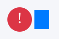

Synthetic fraud scatter

These points are synthetic. Fraud points are placed in the 70–100 box on both axes by the generator. This page is not a fraud detector and it does not use real transactions.

These points are synthetic. Fraud points are placed in the 70–100 box on both axes by the generator. This page is not a fraud detector and it does not use real transactions.